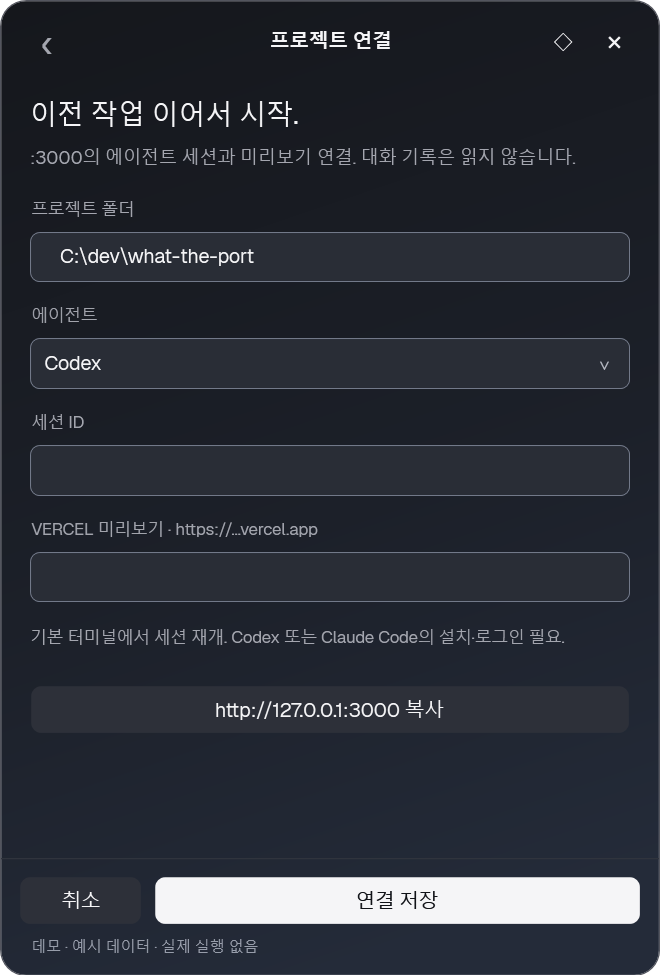
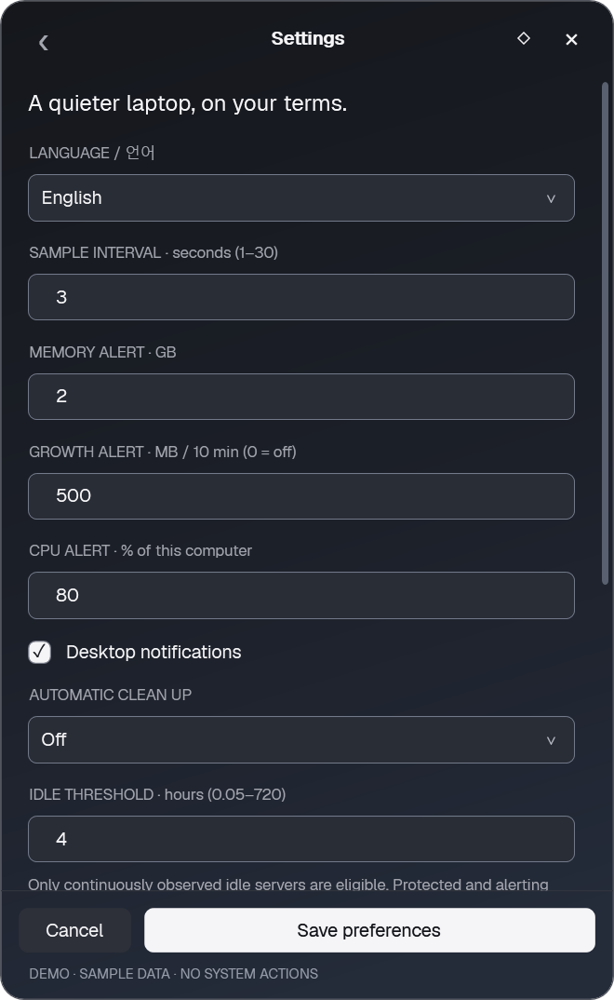
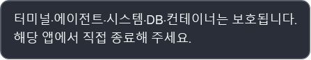

GET STARTED / WINDOWS
처음 실행부터,
작업 복귀까지.
어떤 파일을 열어야 하는지, 숫자는 무엇을 뜻하는지.
실제 앱 화면을 보면서 하나씩 익혀 보세요.
Windows 10/11 x64 · .NET Framework 4.8 · 관리자 권한 불필요
최신 Windows 빌드의 데모 화면입니다. 이미지를 누르면 크게 볼 수 있습니다.
01 / GET STARTED
실행할 파일은 하나.
- Windows ZIP을 다운로드하고 모두 압축 풀기를 선택합니다.
- 압축을 푼 폴더의
WhatThePort.exe를 더블클릭합니다. - 개발 서버를 시작하면 포트와 프로젝트가 목록에 나타납니다.
WhatThePort.exe더블클릭할 앱 본체wtp.exe터미널용 도구. 인수 없이 열면 본체를 표시하고 종료합니다.WhatThePort.Core.dll · .exe.config · fonts/앱이 사용하는 구성 요소. 본체와 같은 폴더에 유지하세요.README.md · docs/ · LICENSE사용 설명과 라이선스
파일 수만큼 프로그램이 따로 상주하는 것은 아닙니다. 이미 앱이 실행 중이면 다른 폴더의 복사본을 열어도 기존 창이 표시됩니다.
새 버전으로 교체할 때
기존 앱의 트레이 아이콘을 우클릭해 앱 종료 / Quit을 선택한 뒤 새 폴더의 EXE를 실행하세요.
현재 빌드는 코드 서명이 없습니다. SHA-256 체크섬으로 파일 일치를 확인할 수 있으며, 체크섬 자체가 배포자 신원을 보증하지는 않습니다.
02 / TRAY & WINDOW
숨겨도, 감시는 계속.
Ctrl + Alt + P는 창 표시/숨김 단축키입니다. 열려 있을 때 누르면 트레이로 숨고, 다시 누르면 나타납니다. 트레이의 점 격자 아이콘도 같은 동작을 합니다.
×도 창을 숨깁니다. Esc는 하위 화면에서 목록으로 돌아가고, 목록에서는 창을 숨깁니다. 감시를 끝내려면 트레이 메뉴의 앱 종료 / Quit을 선택하세요.
◇ / ◆는 다른 창을 클릭해도 패널을 유지하는 핀입니다. 제목을 드래그하면 위치가 저장되며, Ctrl + Shift + 방향키로도 옮길 수 있습니다.
하단의 3초마다 갱신은 서버 조회 간격입니다. 숨긴 동안에도 조회·알림은 계속되지만 목록과 차트는 다시 그리지 않습니다.
 화면 크게 보기 ↗
화면 크게 보기 ↗03 / READ YOUR SERVERS
숫자에서, 프로젝트로.
목록의 행을 누르면 서버 상세 화면이 열립니다. 포트, 실행 시간, 프로젝트 폴더와 브랜치, 최근 10분의 메모리·CPU 추이를 확인할 수 있습니다.
목록 상단의 큰 메모리 숫자는 감시하는 서버들의 합계입니다. 각 서버는 소유 하위 프로세스까지 집계하며, 공유 메모리는 중복될 수 있습니다.
What the Port 자체의 자원 사용량은 Windows 작업 관리자에서 WhatThePort.exe를 확인하세요. 앱 화면의 서버 합계와 다른 수치입니다.
localhost 열기는 로컬 주소를 브라우저로 엽니다. wmux·에이전트·디버거의 내부 포트도 목록에 포함될 수 있어, 모든 포트가 웹 페이지를 제공하지는 않습니다.
긴 이름과 폴더 경로는 마우스를 올려 전체 내용을 볼 수 있습니다. 도움말은 문장별로 줄을 나누고, 경로·URL·소수점은 그대로 표시합니다.
 화면 크게 보기 ↗
화면 크게 보기 ↗04 / PICK UP YOUR WORK
작업하던 곳으로 돌아가기.
상세의 세션·미리보기 연결 · URL 복사를 누르면 프로젝트 연결 화면이 열립니다. 필요한 항목을 입력하고 연결 저장을 누르세요.
- >_ · 프로젝트 폴더에서 터미널 열기
- A · 직접 등록한 에이전트 세션 재개
- ↗ · 등록한 Vercel 미리보기 주소 열기
세션 ID와 Vercel 주소는 각각 선택 사항입니다. 사용하지 않는 기능의 입력란은 비워 두어도 됩니다.
“Vercel 미리보기 URL을 등록해 주세요”
↗에 연결된 주소가 없어 표시하는 등록 안내입니다. 앱이 Vercel에 배포하거나 주소를 자동으로 찾지는 않습니다.


화면 크게 보기 ↗| 입력란·버튼 | 무엇을 넣나요? |
|---|---|
| 프로젝트 폴더 | 감지된 서버 폴더와 일치하는, 실제로 존재하는 절대 경로. |
| 에이전트 | 재개할 세션에 맞춰 Codex 또는 Claude Code 선택. |
| 세션 ID | 선택한 CLI에서 재개할 수 있는 실제 세션 ID. 사용하지 않으면 빈칸. |
| Vercel 미리보기 | 이미 있는 https://프로젝트.vercel.app 주소. 사용하지 않으면 빈칸. |
| 로컬 URL 복사 | 주소만 클립보드에 복사. 입력 중인 설정은 저장하지 않음. |
| 연결 저장 / 취소 | 폴더·포트별로 연결 저장 / 저장 없이 상세 화면으로 복귀. |
세션 재개에는 해당 CLI의 설치·로그인과 접근 가능한 세션이 필요합니다. 상세의 세션: Codex는 연관 프로세스 정보일 수 있으며 정확한 연결 완료를 뜻하지 않습니다. wmux 같은 일반 앱의 내부 포트에는 연결 정보가 없어도 됩니다.
05 / YOUR PREFERENCES
언어는 먼저 보고, 저장.
톱니바퀴 또는 Ctrl + ,로 설정을 엽니다. 한국어 / English를 선택하는 순간 제목·설명·버튼이 바뀝니다. 다른 입력값은 유지됩니다.
- 설정 저장 / Save preferences · 언어와 설정을 확정하고 다음 실행에도 유지.
- 취소 / Cancel · 뒤로 가기 · Esc · 저장 전 언어와 설정으로 복원.
- 트레이로 숨겼다 다시 열기 · 미리보기와 작성 중인 입력 유지.
 한국어 화면 크게 보기 ↗
한국어 화면 크게 보기 ↗

English 화면 크게 보기 ↗| 설정 | 기본값과 의미 |
|---|---|
| 조회 간격 | 3초. 1–30초 범위. 길어지면 조회 횟수와 갱신 빈도가 함께 줄어듦. |
| 메모리 경고 | 2 GB 초과. |
| 증가량 경고 | 10분 동안 500 MB 증가. 0으로 설정하면 끄기. |
| CPU 경고 | 컴퓨터 전체 기준 80% 이상, 연속 3회 관측. |
| 자동 정리 | 끄기 / Off. 유휴 기준 기본 4시간. |
06 / CLEAN UP WITH CONTEXT
확인하고, 필요한 것만 정리.
서버 정리에서 종료할 서버와 예상 회수량을 확인합니다. idle 후보가 미리 선택될 수 있으므로 체크 상태를 확인한 뒤 종료 버튼을 누르세요.
선택한 서버와 소유 하위 프로세스가 즉시 종료됩니다. 작업 저장이나 종료 훅 실행은 보장되지 않습니다. 다른 리스너를 가진 하위 트리는 별도로 다룹니다.
보호됨 · 종료 불가인 항목은 선택할 수 없습니다. 이 앱·상위 프로세스, 터미널·에이전트·시스템·DB·컨테이너 등은 작업을 보호하기 위해 제외합니다.

보호 사유는 상태 위의 도움말과 상세 화면의 안내 상자에서 확인할 수 있습니다.
 화면 크게 보기 ↗
화면 크게 보기 ↗끄기 / Off는 자동 정리 중단, 알림 후 직접 선택 / Ask는 후보 알림, 자동 종료 / Automatic은 연속 관측된 idle 서버의 자동 정리입니다. 보호·경고 서버는 자동 종료하지 않으며, 조회 실패 시에도 자동 정리를 수행하지 않습니다.
서버 본체는 종료됐지만 일부 하위 프로세스가 남을 수 있습니다. 일부 종료 안내가 보이면 종료 결과 상세에서 성공·실패와 제외 사유를 확인하세요.
07 / KEYBOARD
손에 익으면, 더 빠르게.
| 키·조작 | 동작 |
|---|---|
| Ctrl+Alt+P | 창 표시·숨김. 감시는 계속됨. |
| Tab / Shift+Tab | 다음·이전 컨트롤. |
| ↑ / ↓ / Enter | 목록 선택·서버 상세. |
| Esc | 목록 복귀. 목록에서는 트레이로 숨김. |
| Ctrl+, / C | 설정 / 정리 화면. |
| O / T / A / V | 상세에서 로컬 URL / 터미널 / 등록 세션 / 등록 미리보기. |
| Ctrl+Shift+방향키 | 패널 이동·위치 저장. |
| 차트의 ← / → / Home / End | 이전·다음·첫·마지막 표본 값. |
08 / COMMAND LINE
터미널에서도 같은 목록.
압축을 푼 폴더에서 PowerShell을 열고 실행하세요.
.\wtp.exe list
.\wtp.exe list --json
.\wtp.exe list --all프로젝트 링크를 명령으로 등록할 수도 있습니다.
.\wtp.exe link --port 3000 --folder C:\dev\my-app --agent codex --session YOUR_SESSION_IDYOUR_SESSION_ID는 실제 ID로 교체하세요. 같은 폴더·포트의 링크 레코드는 교체되므로, 세션과 미리보기를 유지하려면 같은 명령에 두 항목을 함께 입력해야 합니다.
09 / A LITTLE HELP
여기서 막혔다면.
실행했는데 창이 보이지 않아요.
트레이 아이콘이나 Ctrl+Alt+P로 열어 보세요. 창은 저장된 모니터·위치에서 열립니다. 새 버전으로 바꿀 때는 기존 트레이 메뉴에서 앱을 종료한 뒤 새 EXE를 실행해야 합니다. 설정의 창 위치 초기화로 주 모니터에 되돌릴 수 있습니다.
서버가 목록에 없어요.
기본 필터는 Node·Python·.NET 등 개발 런타임입니다. 설정의 모든 사용자 TCP 리스너 표시로 사용자 정의 실행 파일을 포함할 수 있습니다. 이때 wmux·디버거·에이전트 등의 내부 포트도 함께 보일 수 있습니다.
SmartScreen 경고가 나와요.
서명이 없는 파일의 실행 전 평판 확인 안내입니다. Windows 보호 기능을 끄기보다 파일 출처와 검사 결과를 확인하세요. 앱 실행 후 창이 숨겨지는 동작과는 별개입니다. Microsoft 안내.
휴대폰에서도 앱을 쓸 수 있나요?
앱은 Windows 10/11 x64에서 실행됩니다. 이 웹사이트와 가이드는 휴대폰에서도 볼 수 있습니다. 내려받은 ZIP은 Windows PC에서 압축을 풀어 실행하세요.
어떤 환경을 지원하지 않나요?
Windows 네이티브 TCP 프로세스가 대상입니다. UDP, WSL·Docker 내부 PID와 자원 귀속, 다른 사용자의 프로세스 상세는 지원하지 않습니다. 서버 재시작·자동 업데이트·대화형 TUI·PR 연결은 미구현입니다. Windows 알림은 집중 지원 등의 설정에 따라 보이지 않을 수 있습니다.
데이터를 외부로 보내나요?
로컬 TCP 테이블과 프로세스 정보로 동작하며 텔레메트리·자동 업데이트 요청이 없습니다. 대화 기록·인증 파일을 읽지 않습니다. 이 웹사이트도 계정·분석 스크립트·외부 글꼴 없이 동작합니다.
키보드나 화면 읽기 프로그램을 지원하나요?
앱의 입력란과 아이콘 버튼에는 UI Automation 이름이 있으며 차트의 키보드 탐색과 표본 설명을 제공합니다. 사이트는 건너뛰기 링크·키보드 메뉴·화면 선택 탭·이미지 대체 텍스트를 제공합니다. 실제 Narrator/NVDA 음성 출력을 포함한 완전한 적합성 인증은 하지 않았습니다.